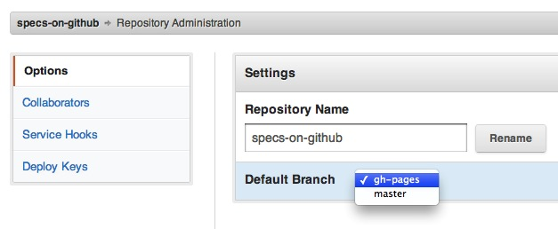

-
Create a new GitHub repository. The spec's short name in lowercase is usually a good choice.
-
Clone the repository locally,
git clone git@github.com:tobie/specs-on-github.git -
Navigate to the repo…
cd specs-on-github -
…and create a new branch which you'll call
gh-pages.git checkout -b gh-pagesBranches named that way trigger GitHubs's Pages mode. When in Pages mode, the repository's content gets automagically served from http://username.github.com/reponame.
-
Now we want to create the spec document itself. I use ReSpec, so I simply curl the content of the default template into an
index.htmlpage at the root of my repository:curl http://www.w3.org/respec/examples/template.html > index.html -
We can then add it to the repository:
git add index.html git commit -m "Add empty doc." -
Lets now push these changes back to our GitHub account:
git push origin gh-pages -
The first time you push to a
gh-pagesit can take a little while for the code to be published to your subdomain, so be patient. But it'll be ready soon enough. -
In the meantime you can visit the repository's admin page and select
gh-pagesas the default branch.
-
You can now delete the
masterbranch.git branch -D master git push origin --delete master -
Finally, your
README.mdfile should reflect the repository is used for spec work. You can just copy an existingREADME.mdif you can't recall the Markdown specifics and amend it accordingly.curl https://raw.github.com/tobie/specs-on-github/gh-pages/README.md > README.md # Change the links inside of the readme file git add README.md git commit -m "Updated README to link to live spec." git push origin -
Bask in the glory of modern spec development.